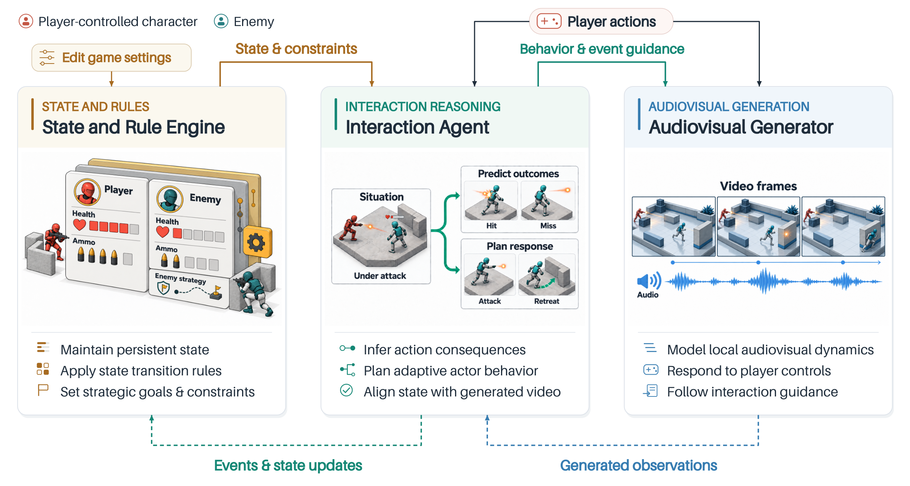
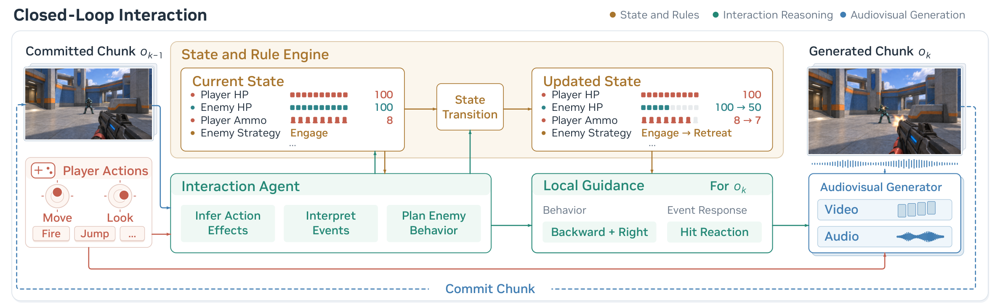
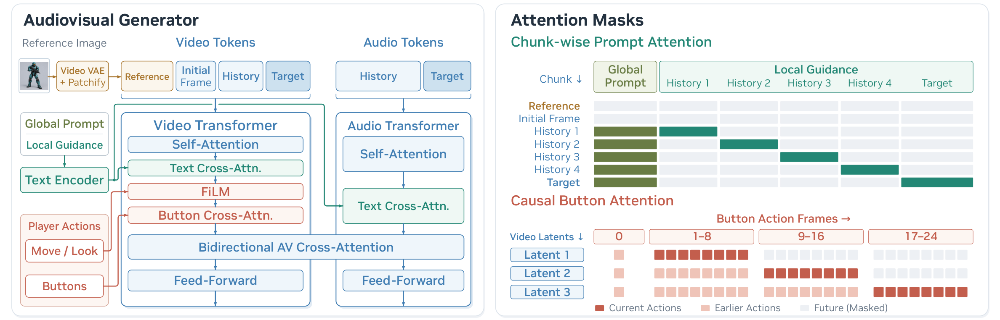

State & rules
An event-driven state machine tracks health, life, ammunition, and strategy, then applies executable transition rules.
Persistent consequences
Introducing RIGen — generative gameplay where player actions change the world, world events affect the player, and persistent state shapes what happens next.
Open a demo to explore its timeline. Select a chunk when available to see its guidance, or follow along as the video plays.
Loading demonstrations…
RIGen couples persistent game state, interaction reasoning, and audiovisual generation so every chunk can change what happens next.
An event-driven state machine tracks health, life, ammunition, and strategy, then applies executable transition rules.
The InternVL3-8B interaction agent predicts events and behavior, while visual verification corrects the planned state before the next decision.
Global scene context and chunk-local guidance condition an action-aware audiovisual generator for continued play.



The controller stores player and enemy health, life/death, ammunition, and opponent strategy. Firing consumes a round; hits change health; zero health triggers death; low-health enemies can switch to retreat.
At each chunk boundary, the agent reads recent video, controls, and state to propose events and behavior. Sampled frames verify the previous chunk, and observed outcomes correct the next state before predictions are committed.
A global prompt preserves environment, weapon, and character identity. Local guidance describes behavior, visibility, damage, and death. The LTX-2.3 22B backbone couples video and audio streams.
Bidirectional adaptation is followed by autoregressive training with up to four clean history chunks, a first-frame anchor, and a character reference. Arena adds sustained-combat adaptation, distillation, and a causal video refiner.
Runtime loop Verify correct reason guide generate verify.
A controlled Xonotic capture pipeline aligns audiovisual gameplay with actions, camera geometry, game state, events, and chunk-level interaction guidance.
Each part targets a different level of gameplay learning, from local control dynamics to sustained combat.
Teaches how movement, camera, firing, and collisions change the immediate scene.
Connects player actions to opponent behavior, visibility, damage, and combat outcomes.
Extends interactions across actor sequences and successive state-dependent outcomes.
Trains ongoing one-on-one combat with independent bot control and continued exchange.
Scenarios vary maps, weapons, actor appearances, enemy presence, visibility, and outcome. Basic Dynamics spans 28 maps and nine weapon types; Interaction covers 42 model/skin/color enemy references across those weapons, yielding 378+ observed weapon–appearance combinations, with explicit no-fire, miss, nonlethal-hit, and kill branches.
Each record carries first-person video, game audio, applied controls, engine-grounded camera poses, scene and character descriptions, and bound actor references. Gemini 3.1 Flash-Lite supplies map, weapon, and appearance labels.
Telemetry aligns opponent motion, visibility, attacks, damage, kills, and player death to each chunk. Short Interaction covers controlled outcomes; Interaction-Long preserves actor sequences; Arena captures ongoing independent bot behavior.
Route geometry, camera behavior, media metadata, timing, prompt schedules, and reference bindings are validated. One hundred Interaction recordings are held out, with unseen maps and enemy appearances for evaluation.